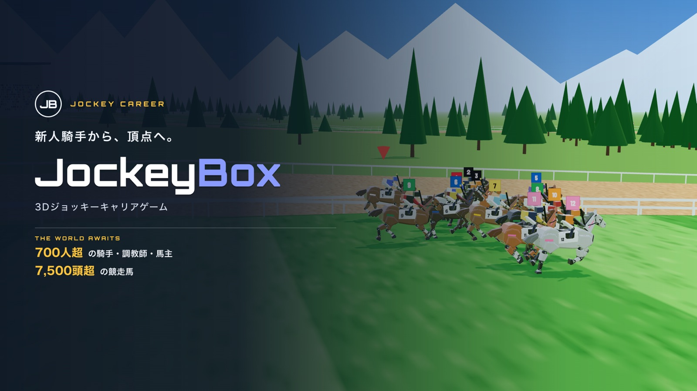
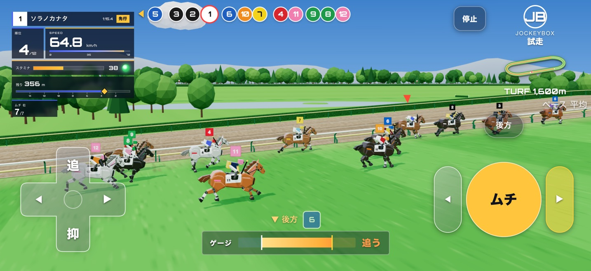
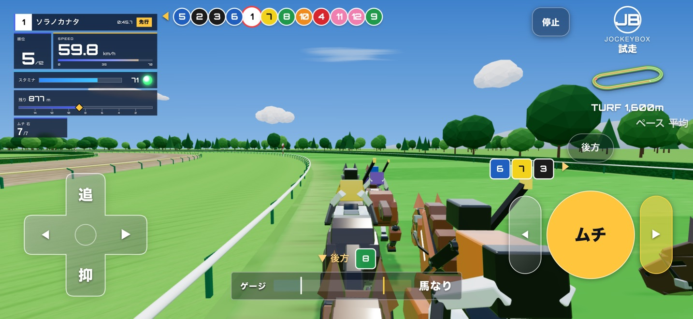
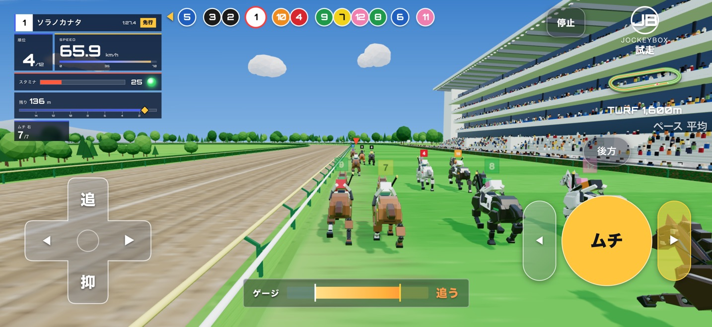
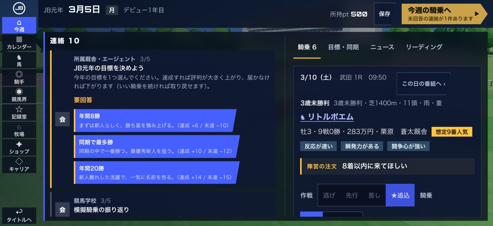
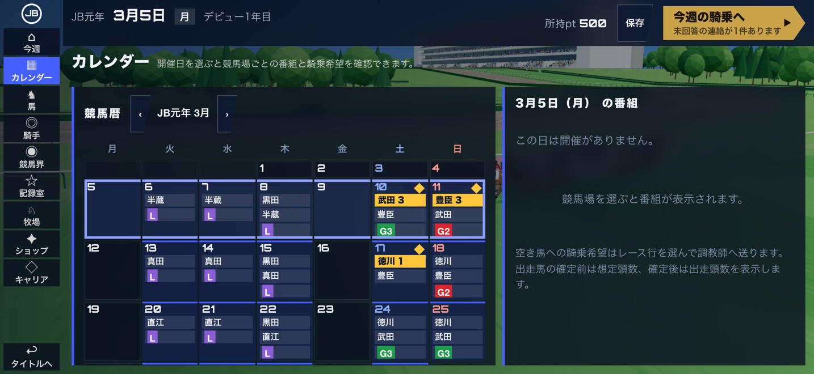
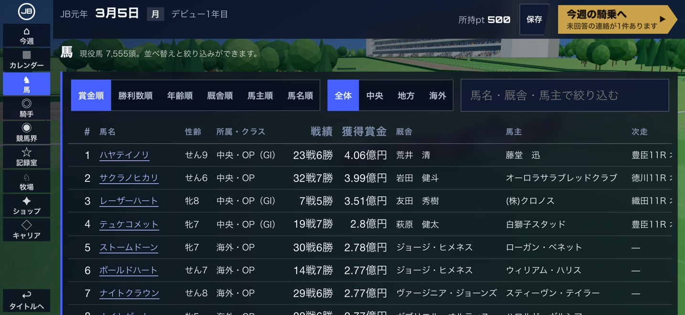

勝敗を決めるのは、乗り方
馬ごとの気性やスタートの上手さを少しずつつかみ、進路を選び、仕掛けどころを自分で決める。能力の差より、乗り方と展開で着順が動きます。
Learn each horse's temperament, pick your line and decide when to go. How you ride and how the race unfolds matter more than raw stats.
風を切れ。勝利へ、駆け抜けろ。
JockeyBox（ジョッキーボックス）は、騎手の判断と駆け引きをそのまま味わう3D競馬ゲームです。レースでは自分の手で追い、抑え、ムチを入れる。馬の癖を読み、進路を選び、仕掛けどころを決める。レースの外では騎乗依頼を受け、お手馬と出会い、中央・地方、そして海外へ。
JockeyBox puts a jockey's decisions and tactics in your hands. Push, hold and go for the whip; read each horse, find your line and pick your moment. Off the track, earn rides, find horses that become yours, and race at home and abroad.

馬ごとの気性やスタートの上手さを少しずつつかみ、進路を選び、仕掛けどころを自分で決める。能力の差より、乗り方と展開で着順が動きます。
Learn each horse's temperament, pick your line and decide when to go. How you ride and how the race unfolds matter more than raw stats.
騎乗依頼、お手馬、海外遠征。勝たせた名馬は引退後に牧場へ。配合で生まれた仔に名前を付けて送り出し、長く乗り続けた先では子どもが手綱を受け継ぎます。
Earn rides, make horses your own and race abroad. Your champions retire to your farm, where you breed and name the next generation. Ride long enough and your child can take up the reins.
戦国の名将の名を冠した15の競馬場と、24のオリジナルG1。中央・地方のレースが一年を通して続き、お手馬で重賞を勝てば海外遠征の声もかかります。
15 tracks named after legendary warlords and strategists and 24 original G1 races, all year round. Win graded races on your own horse and overseas offers follow.
人数・頭数はゲーム開始時の数で、プレイ中に増減します。レース名・競馬場名はすべてゲーム内オリジナルです。Figures are at the start of a new game. All race and track names are original to the game.






iPhone・iPad・Mac向けのベータテストを、AppleのTestFlightで行っています。製品版の候補を、ひと足先に遊べます。参加には、App StoreのTestFlightアプリが必要です。
The beta for iPhone, iPad and Mac is open through Apple's TestFlight. Play the release candidate ahead of launch. You'll need Apple's TestFlight app.
報道・紹介でのご利用向けの情報です。画像はこのページのものをお使いいただけます。
Facts for press and creators. Feel free to use the images on this page.
| タイトルTitle | JockeyBox - 競馬ジョッキーキャリアゲームJockeyBox: Horse Racing Career |
|---|---|
| キャッチコピーTagline | 新人騎手から頂点へ。3DレースRide from rookie to champion |
| ジャンルGenre | 3D競馬ジョッキーゲーム（騎手のキャリア・レース）3D horse racing / jockey career |
| 対応機種Platforms | iPhone・iPad（iOS 18以降）、Appleシリコン搭載のMaciPhone and iPad (iOS 18 or later), Mac with Apple silicon |
| 言語Languages | 日本語・英語（ゲーム内で切り替え）Japanese and English, switchable in-game |
| 開発・運営Developer | BOX合同会社（神奈川県横浜市）BOX LLC (Yokohama, Japan) |
| お問い合わせContact | support@ipsbox.com |
レース名・競馬場名・人名・馬名はすべてゲーム内オリジナルです。Race, track, person and horse names are all original to the game.